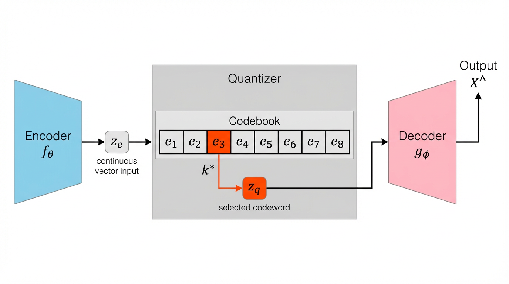
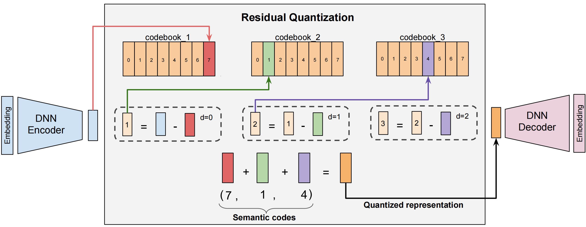
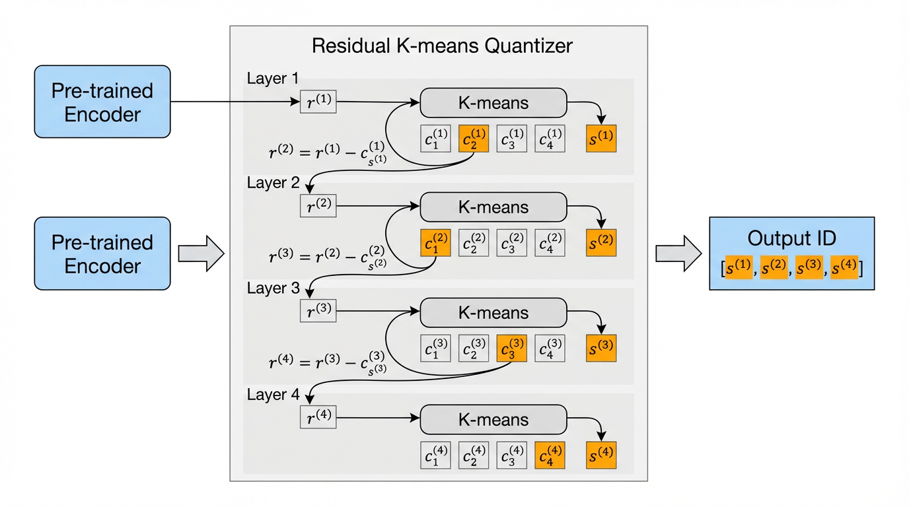

5.4. 推荐中的Tokenizer技术¶
在前一节中，我们系统梳理了从LLM到生成式推荐的映射关系，特别指出了物品Token化问题是连接传统推荐数据和生成式模型的关键桥梁。现在，让我们深入探讨这一核心问题：如何将推荐系统中的物品转化为生成式模型能够理解和生成的Token序列？
5.4.1. Tokenizer范式演进¶
在深入技术细节之前，我们需要从全局视角理解生成式推荐中物品表示的三种主流范式及其演进逻辑。这不仅是技术选型的问题，更反映了推荐系统建模哲学的深刻转变。
5.4.1.1. 三种范式的技术特征¶
稀疏ID范式（Sparse ID-Based）
这是传统推荐系统的标准做法：为每个物品分配唯一的原子ID（如
item_10086、video_9527）。在判别式模型中，这些ID通过Embedding层映射到连续向量空间，然后利用深度网络学习用户-物品交互模式。
代表性工作包括HSTU (Zhai et al., 2024) ，它将用户行为序列组织为
[item₁, action₁, timestamp₁, ..., itemₙ, actionₙ, timestampₙ]
的结构化形式，通过可学习的Embedding矩阵为每个ID赋予语义。GenRec
(Cao and Lio, 2024)
则直接在生成式架构中使用稀疏ID，通过特殊的注意力机制捕获ID之间的协同关系。
这种方式的核心优势在于：
无碰撞保证：每个物品拥有唯一标识符，不存在歧义
特征交互自由：可以灵活地设计各种特征组合网络（如DCN、DIN）
工程成熟度高：与现有推荐系统基础设施无缝衔接
然而，当我们试图将其迁移到生成式架构时，面临着三大根本性困境：
词表爆炸问题。回顾LLM的建模原理，生成式模型的核心任务是在词表上进行下一个Token的概率分布预测：\(p_\theta(i_{1:T} | u, c) = \prod_{t=1}^{T} p_\theta(i_t | i_{<t}, u, c)\)。GPT-3的词表约为5万，LLaMA的词表约为3.2万，这使得输出层的Softmax计算在工程上是可行的（复杂度 \(O(V \cdot d)\)，其中 \(V\) 是词表大小，\(d\) 是隐层维度）。但如果将每个物品ID视为一个词，抖音的数十亿视频、淘宝的数亿商品，都意味着词表大小 \(V\) 将达到十亿级别。在如此规模的词表上计算Softmax概率分布，即使是最先进的分布式系统也难以承受。
存储与泛化的双重困境。要为十亿个ID各自维护一个Embedding向量（假设256维），需要约1TB的参数存储。这不仅占用了宝贵的模型容量预算（使得用于深层语义理解的Transformer层不得不缩减），更致命的是：原子ID之间完全正交，模型对新物品毫无泛化能力。当一个新视频上线时，它的ID对模型来说是一个从未见过的陌生符号，模型必须从零开始积累用户交互数据，才能逐渐“认识”这个ID。
协同信号的隐式依赖。传统ID方法依赖海量的用户行为数据来学习物品间的相似性——只有当模型见过足够多的“看过A的用户也看了B”的模式后，才能让 Embedding(A) 和 Embedding(B) 在向量空间中靠近。这种纯粹基于统计关联的学习方式，在数据稀疏场景下效果急剧恶化。
文本ID范式（Text-Based）
既然LLM擅长处理自然语言，为什么不直接用文本来表示物品？这种思路催生了文本ID范式：将物品的属性、描述序列化为自然语言，利用LLM的预训练词表（通常为3-5万）进行编码和生成。
M6-Rec (Cui et al., 2022) 是这一范式的早期代表，它通过模板填充将商品属性转化为自然语言：
"推荐商品：Apple iPhone 15 Pro，存储容量：256GB，颜色：钛金属蓝，价格：¥8999"
然后将用户的历史交互序列组织为对话形式，利用M6模型的生成能力预测下一个商品的文本描述。
LLMTreeRec (Zhang et al., 2025) 进一步优化了文本表示策略，它将商品属性组织为树状结构：
电子产品 → 手机通讯 → 智能手机 → Apple → iPhone 15 Pro → [颜色, 容量, 价格]
这种层次化的文本表示既保留了属性信息，又避免了过长的文本序列。
TallRec (Bao et al., 2023) 和 P5 (Geng et al., 2022) 则采用“attribute name: attribute value”的键值对形式，直接复用T5等预训练模型的文本理解能力，实现推荐任务与自然语言处理的统一建模。
文本ID的核心优势显而易见：
语义丰富：自然语言天然承载物品的属性和类别信息
零样本泛化：LLM的预训练知识可以理解从未见过的物品描述
可解释性强：生成的推荐结果是人类可读的文本
然而，这种范式在实际应用中暴露出两大致命缺陷：
表示效率低下。一个简单的商品可能需要数十到上百个token才能完整描述（如上面的iPhone例子就需要约30个token）。这意味着：（1）计算成本成倍增长——Transformer的自注意力机制复杂度为 \(O(n^2)\)，序列长度翻倍导致计算量增加4倍；（2）信息密度稀疏——大量的连接词、介词等对推荐任务贡献有限。
Grounding困难。生成式模型输出的是文本token序列，如何将其精确映射回候选物品集？这是一个非平凡的挑战：
歧义性：生成的文本可能对应多个商品（如“Apple 手机”可能匹配数百款机型）
不完整性：生成过程可能提前终止，导致描述不完整
候选集外问题：生成的文本可能描述了一个不存在的商品
BIGRec (Bao et al., 2025) 尝试通过两阶段方案缓解：先用LLM生成文本，再计算生成文本与候选集中所有物品描述的L2距离进行重排。但这本质上是用额外的检索模块来弥补生成式框架的不足，违背了端到端建模的初衷。
语义ID范式（Semantic ID-Based）
语义ID（SID）方案是对上述两种范式的革命性超越：它将物品表示为固定长度的离散token序列，每个token来自一个可控大小的语义码本（通常为数千到数万）。这种设计巧妙地平衡了表征能力、计算效率和精确grounding三者之间的矛盾。
以TIGER (Rajput et al., 2023) 为例，一部“NBA球星扣篮集锦”视频会被编码为：
SID = [10, 5, 42] （对应：体育竞技 → 篮球 → 扣篮集锦）
其中每个数字代表该层级码本中的一个语义概念。OneRec (Deng et al., 2025) 进一步优化了SID的构建流程，通过联合学习多模态特征（视频画面、文本标题、用户协同行为）来生成更精准的语义表示。OneSearch (Chen et al., 2025) 将SID应用于电商搜索场景，使用约4000-6000大小的词表，成功支撑了数亿商品的语义检索。
SID范式的核心优势体现在三个层面：
1. 可控的固定词表。无论物品库有多大，构成它们的“基础语义单元”是有限的。就像英语中所有书籍都由约17万个词汇组合而成，推荐系统中的所有物品也可以由数千到数万个语义token组合表达。OneRec使用约8000大小的词表，OneSearch使用约4000-6000的词表，这使得生成式模型可以像GPT一样进行端到端的自回归训练，计算开销完全可控。
2. 天然的层次化结构。SID不是扁平的符号，而是层次化的序列。前面的token表示粗粒度的类别（如“体育”），后面的token表示细粒度的属性（如“篮球扣篮”）。这种结构天然支持前缀匹配——模型在生成过程中，先确定大类，再逐步细化，这与人类的认知决策过程高度一致。更重要的是，这种层次化使得相似物品自动共享相同的前缀，为模型的泛化能力提供了结构化的归纳偏置。
3.
从记忆到推理的跨越。对于原子ID，模型只能通过“死记硬背”来学习物品间的关联——必须实际见过用户点击了A和B，才能知道A与B相似。而对于语义ID，相似性关系被编码在token序列的结构中：所有篮球视频共享
[10, 5, ...]
前缀，所有教学类内容共享某个特定的后缀token。一旦模型学会了用户对“篮球”这一语义概念的偏好，它就能自然地将这一认知泛化到所有包含该语义token的新物品上，即使这些物品从未出现在训练数据中。
5.4.1.2. 核心理念：符号到语义¶
5.4.1.3. 传统ID表示的困境¶
在探讨解决方案之前，我们需要深刻理解问题的本质。传统推荐系统为每个物品分配一个唯一的数字ID——ID:10086、ID:9527……这种原子ID（Atomic ID）表示方式在判别式架构（如深度学习排序模型）中运作良好：模型通过Embedding层将ID映射到连续向量空间，然后利用海量的用户行为数据学习这些向量的表示。例如，经过充分训练后，两部成龙主演的动作片ID:1和ID:2的Embedding向量会在语义空间中彼此接近。
然而，当我们尝试将推荐任务重构为生成式问题时，这种表示方式面临着与生成式架构的根本性不兼容，在上一节中我们已经详细分析了这一点。核心矛盾在于：生成式模型需要在离散token空间中进行概率建模，而传统ID的超大规模词表使得这种建模在数学和工程上都不可行。
5.4.1.4. 语义ID的设计哲学¶
要从根本上解决上述困境，我们需要一种新的物品表示范式：语义ID（Semantic ID）。其核心思想是将物品从“身份标识”转变为“语义描述”——不再用一个随机分配的数字来标记物品，而是用一串承载语义信息的token序列来表征物品的内容和属性。
这种转变可以类比为人类认知系统的运作方式。当你向朋友推荐一部电影时，你不会说“我推荐ID:89757”，而是会说“我推荐一部科幻悬疑片，讲述人工智能觉醒的故事，视觉效果震撼，节奏紧凑”。这段描述本身就是一个语义序列，它通过层次化的概念组合（“科幻” → “悬疑” → “AI” → “视觉效果”）来唯一确定一部电影，同时天然地编码了物品之间的相似性关系——所有科幻片共享“科幻”这一前缀，所有AI题材的电影共享更长的前缀。
在工程实现中，语义ID通过综合利用两类信号来生成：
内容信号：物品的多模态特征（视频画面、文本标题、商品图片等）通过预训练的编码器（如CLIP、BERT）提取语义向量
协同信号：用户-物品交互矩阵中蕴含的群体行为模式（如“观看该视频的用户通常也看某类内容”）
这两类信号被联合编码为一个连续的语义向量，然后通过离散化编码技术（如向量量化）将其转化为token序列。例如，一个“NBA球星扣篮集锦”视频可能被编码为
[体育竞技, 篮球, 扣篮, 集锦]，在实际系统中则表示为数字序列
[10, 5, 42, 89]。
5.4.1.5. 语义ID的关键优势¶
这种范式转变带来了三个层面的根本性改进（在上一节的表格中已有呈现，这里进一步阐述其内在机制）：
1. 可控的固定词表。无论物品库有多大，构成它们的“基础语义单元”是有限的。就像英语中所有书籍都由约17万个词汇组合而成，推荐系统中的所有物品也可以由数千到数万个语义token组合表达。这种组合爆炸式的表征能力来自于序列的组合性质：假设词表大小为 \(K=8000\)，序列长度为 \(L=4\)，则理论上可以表示 \(K^L = 8000^4 \approx 4 \times 10^{15}\) 个不同的物品，远超任何实际物品库的规模。
2. 天然的层次化结构。语义ID不是扁平的符号，而是层次化的序列。这种层次化体现在两个维度：
纵向层次：序列的前后位置编码了从粗粒度到细粒度的语义递进。第一个token可能表示“体育”，第二个token在“体育”的基础上细化为“篮球”，第三个token进一步细化为“扣篮”
横向聚类：在同一层级上，相似的物品会被分配到相近的token。所有球类运动可能集中在token 5-15的范围内，而所有音乐类内容集中在token 200-250
这种结构为模型提供了强大的归纳偏置。当模型学习到用户喜欢“篮球”（token
5）时，它可以自然地将这一偏好迁移到所有以 [10, 5, ...]
开头的物品上，实现基于前缀的泛化。
3. 从记忆到推理的跨越。这是语义ID最深刻的价值。传统ID方法本质上是一种查表式记忆：模型必须为每个具体的（用户，物品）配对积累足够的观测数据，才能学会这个配对的关联强度。而语义ID将这种具体的关联提升为概念层面的推理：
一阶推理：如果用户喜欢物品A（SID:
[10, 5, 42]），模型可以推断用户可能喜欢具有相同前缀的物品B（SID:[10, 5, 38]）二阶推理：如果大量用户在观看
[10, 5, *]类物品后，倾向于点击[15, 8, *]类物品，模型可以学习到“篮球→足球”这一跨类别的迁移模式组合推理：模型可以将从不同维度学到的偏好进行组合，如“用户喜欢教学类（token 80）+ 篮球（token 5）”推断出用户可能喜欢
[10, 5, 80, *]（篮球教学视频）
这种从记忆到推理的跨越，使得语义ID方法在数据稀疏场景（如冷启动、长尾物品推荐）下仍能保持强大的性能。这也是为什么语义ID逐渐成为生成式推荐主流范式的根本原因。
5.4.2. 端到端离散化技术¶
在确定了语义ID的战略价值后，我们需要一套具体的技术来实现它：如何将物品的丰富内容（文本、图像、行为序列）转化为结构化的离散ID序列？这正是离散化编码技术发挥核心作用的舞台。学术界提出的端到端训练方案以VQ-VAE为奠基，通过梯度学习可训练的码本；而RQ-VAE则在此基础上实现了层次化的语义表示。
它们共同的目标是：将高维、连续的语义空间，高效且结构化地映射到低维、离散的令牌序列。这不仅解决了原子ID的“孤岛”问题，还为生成式模型提供了可操作的序列化输入。
5.4.2.1. VQ-VAE：离散化的奠基¶
5.4.2.1.1. 核心思想：连续到离散¶
VQ-VAE（Vector Quantised-Variational AutoEncoder） (Van Den Oord et al., 2017) 是语义ID离散化编码的奠基性技术。它解决了一个关键问题：如何将连续的高维语义表示转换为离散的符号序列，同时保持足够的表征能力以供后续生成模型使用。
从推荐系统的视角来看，VQ-VAE的价值在于：它通过引入可学习的码本（Codebook），建立了连续语义空间到离散符号空间的有效映射。这种映射不仅大幅降低了表示空间的维度（从数十亿的原子ID到万级的码本），更重要的是赋予了ID之间的语义关联性——相似物品会被映射到相近的码本向量，从而为生成式模型的泛化能力奠定基础。
5.4.2.1.2. 架构拆解：三阶段流程¶
VQ-VAE采用编码器-量化器-解码器的三阶段架构，如图所示：
{kind=link}

图5.4.1 VQ-VAE模型结构¶
第一阶段：编码器映射
编码器 \(f_\theta\) 将输入数据 \(x \in \mathbb{R}^{D}\) 映射为连续的潜在向量：
其中 \(d \ll D\)，实现了维度压缩。对于推荐场景，输入 \(x\) 可以是物品的多模态特征（如视频的视觉特征、文本描述等）。
第二阶段：向量量化
这是VQ-VAE的核心创新。系统维护一个可学习的码本：
其中 \(K\) 是码本大小（通常在数千到数万之间），每个 \(e_i \in \mathbb{R}^{d}\) 称为一个码字（codeword）。量化过程通过最近邻搜索实现：
这一步将连续向量 \(z_e\) 离散化为码本索引 \(k^* \in \{1,\ldots,K\}\)。注意到量化操作本质上是一个硬决策，这也是后续需要特殊梯度处理的根源。
数值推演：最近邻搜索假设编码器输出 \(z_e = [0.6, 0.8]\)，码本中有两个向量 \(e_1 = [1.0, 1.0]\) 和 \(e_2 = [0.0, 0.0]\)。 - 距离 \(e_1\): \(\sqrt{(0.6-1.0)^2 + (0.8-1.0)^2} = \sqrt{0.16+0.04} \approx 0.45\) - 距离 \(e_2\): \(\sqrt{(0.6-0.0)^2 + (0.8-0.0)^2} = \sqrt{0.36+0.64} = 1.0\)由于 \(0.45 < 1.0\)，模型选择 \(e_1\) 作为量化结果，即 \(z_q = [1.0, 1.0]\)。这个过程就是将连续空间“坍缩”到最近的离散点。
第三阶段：解码器重建
解码器 \(g_\phi\) 从量化后的向量重建原始输入：
整个流程可以形式化为：
5.4.2.1.3. 优化目标与损失函数设计¶
VQ-VAE的训练目标函数由三个协同工作的部分组成：
其中 \(\text{sg}[\cdot]\) 表示停止梯度（stop gradient）操作，\(\beta\) 是承诺损失的权重系数（原论文建议取0.25）。
重建损失 \(\mathcal{L}_{\text{recon}}\)
这是自编码器的核心目标，度量重建质量。对于推荐系统中的多模态输入，可以根据数据类型选择不同的重建损失：图像数据常用 \(L_2\) 损失，文本特征可使用余弦距离。
码本学习损失 \(\mathcal{L}_{\text{codebook}}\)
该项推动码本向量 \(e_k\) 向编码器输出 \(z_e\) 靠近。关键设计在于 \(\text{sg}[z_e]\)：通过停止梯度操作，确保该损失的梯度只更新码本向量 \(E\)，而不影响编码器参数 \(\theta\)。这种设计使得码本能够动态地适应数据分布。
承诺损失 \(\mathcal{L}_{\text{commit}}\)
该项约束编码器输出 \(z_e\) 不能距离量化后的码字 \(z_q\) 过远。这里 \(\text{sg}[z_q]\) 确保梯度只作用于编码器参数 \(\theta\)。承诺损失的引入源于一个重要观察：如果没有该项，编码器可能会学习到任意大的输出空间，导致训练不稳定。
5.4.2.1.4. 梯度传播：直通估计器¶
量化操作 \(z_q = \arg\min_k \|z_e - e_k\|_2\) 在数学上几乎处处不可导（梯度为零或未定义），这使得标准的反向传播无法直接应用。VQ-VAE采用直通估计器（Straight-Through Estimator, STE）[Bengio et al., 2013] 来解决这一根本性挑战。
STE的核心思想是前向传播与反向传播的策略分离：
前向传播：严格执行离散化操作
(5.4.10)¶\[z_q = e_{k^*}, \quad k^* = \arg\min_j \|z_e - e_j\|_2\]反向传播：将量化操作视为恒等映射
(5.4.11)¶\[\frac{\partial \mathcal{L}}{\partial z_e} \approx \frac{\partial \mathcal{L}}{\partial z_q}\]
这一近似的直观解释是：虽然量化是离散跳变，但我们假设在反向传播时它对梯度的影响是“透明”的，直接将解码器的梯度传递给编码器。虽然这在数学上是一种近似，但大量实验表明，STE在离散化模型的训练中具有惊人的有效性。
完整的梯度流如下：
编码器更新：接收来自重建损失（经过STE）和承诺损失的梯度
(5.4.12)¶\[\nabla_\theta \mathcal{L} = \nabla_\theta \mathcal{L}_{\text{recon}} + \beta \nabla_\theta \mathcal{L}_{\text{commit}}\]解码器更新：仅依赖重建损失的梯度
(5.4.13)¶\[\nabla_\phi \mathcal{L} = \nabla_\phi \mathcal{L}_{\text{recon}}\]码本更新：接收来自码本学习损失的梯度
(5.4.14)¶\[\nabla_E \mathcal{L} = \nabla_E \mathcal{L}_{\text{codebook}}\]
值得注意的是，尽管VQ-VAE的命名中包含“VAE”，但其训练过程与变分自编码器有本质区别。标准VAE通过变分推断优化证据下界（ELBO），引入KL散度约束潜在分布；而VQ-VAE直接优化重建损失，通过离散码本实现表示学习，更接近于普通自编码器（AE）的范式。
5.4.2.2. RQ-VAE：层次化进阶¶
5.4.2.2.1. 表征能力突破¶
VQ-VAE将每个物品映射为单一的离散令牌（码本索引 \(k^* \in \{1,\ldots,K\}\)），这种一对一的映射方式面临着“表征精度-码本规模”的根本性权衡困境：
增大码本容量 \(K\)：可提升表征精度，但带来存储开销和训练不稳定性（码本向量难以被充分学习）
限制码本大小：训练更稳定，但单个令牌难以捕获复杂物品的多维语义（如一部电影同时具有“科幻”、“悬疑”、“反乌托邦”等多层属性）
RQ-VAE（Residual Quantised-VAE）[Zeghidour et al., 2021] 通过残差量化（Residual Quantization）机制从根本上打破了这一限制：它将单次量化扩展为 \(L\) 层级联的量化过程，每层捕获上一层遗漏的残差信息，最终生成长度为 \(L\) 的令牌序列。这种设计在保持码本规模可控（每层仍使用 \(K\) 大小的码本）的同时，将理论表征容量提升至 \(K^L\)。
{kind=link}

图5.4.2 RQ-VAE原理图¶
5.4.2.2.2. 残差量化的迭代机制¶
RQ-VAE的核心创新在于将单次量化的“损失不可恢复”转变为迭代逼近的“渐进式精细化”。给定编码器输出 \(z_e \in \mathbb{R}^d\)，第 \(\ell\) 层（\(\ell = 1, \ldots, L\)）的量化过程定义为：
其中： - \(r_0 = z_e\) 为初始残差（即编码器输出） - \(e^{(\ell)}_j \in \mathbb{R}^{d}\) 表示第 \(\ell\) 层码本中的第 \(j\) 个码字 - \(k_\ell\) 为第 \(\ell\) 层选中的码本索引 - \(r_{\ell}\) 为当前层未被捕获的残差，将传递给下一层
最终的量化表示由所有层的码字累加获得：
而物品的语义ID则以令牌序列形式呈现：\(\text{ID} = [k_1, k_2, \ldots, k_L]\)。
我们可以通过一个简化的数值例子来理解这种“接力式”的量化过程：
数值推演：残差逼近假设目标向量 \(z = [5.5]\)（简化为1维），我们用两层码本进行逼近： - Layer 1：码本为 \(\{[0], [5], [10]\}\)。 - 最近邻是 \([5]\)，残差 \(r_1 = 5.5 - 5 = 0.5\)。 - Layer 2：码本为 \(\{[0.0], [0.4], [0.8]\}\)。 - \(r_1=0.5\) 的最近邻是 \([0.4]\)，残差 \(r_2 = 0.5 - 0.4 = 0.1\)。最终重建结果 \(\hat{z} = 5 + 0.4 = 5.4\)。可以看到，通过两层叠加，误差从 \(0.5\) 降低到了 \(0.1\)。
层次化语义的涌现：这种逐层逼近的设计天然形成了语义的层次化结构——前期层次捕获粗粒度、全局性的语义（如“体育类视频”），后续层次则编码细粒度的局部特征（如“篮球教学”、“进阶技巧”）。这与人类认知中“从抽象到具体”的思维模式高度契合。
不妨以一个“NBA球星扣篮集锦”的视频编码过程为例，来直观理解这种残差叠加的机制。假设该视频的语义向量为 \(z\)：
Layer 1（粗粒度）：在第一层码本中，最接近 \(z\) 的向量是代表“体育竞技”的 \(e_{10}\)。此时模型捕获了视频的大类属性，ID序列为
[10]。剩余的残差 \(r_1\) 包含了“虽然是体育，但是什么体育？”的信息。Layer 2（中粒度）：在第二层码本中，模型在 \(r_1\) 中发现最接近的是代表“篮球项目”的 \(e_{5}\)。ID序列更新为
[10, 5]。此时残差 \(r_2\) 进一步聚焦于“是篮球比赛还是教学？是投篮还是扣篮？”。Layer 3（细粒度）：在第三层，模型用代表“扣篮动作”的 \(e_{42}\) 捕获了最后的细节。
最终，模型输出的语义ID [10, 5, 42]
就像一个不断对焦的过程，精准地描述了视频内容。这种机制保证了即使模型只看前缀
[10, 5]，也能知道这是一个篮球视频，从而实现有效的模糊匹配。
5.4.2.2.3. 优化目标的适配修改¶
RQ-VAE的损失函数在VQ-VAE的基础上扩展为多层累积形式：
关键设计要点：
重建损失：与VQ-VAE相同，基于最终的累积量化表示 \(z_q = \sum_{\ell=1}^{L} e^{(\ell)}_{k_\ell}\) 进行解码
分层码本学习：每层独立优化其码本 \(E^{(\ell)}\)，推动码字向当前层残差 \(r_{\ell-1}\) 靠近
承诺损失的级联：每层的承诺损失确保残差 \(r_{\ell-1}\) 不会在量化后产生过大偏移
梯度传播仍依赖直通估计器（STE），但需要在每层量化操作处独立应用：
5.4.3. 工业级方案¶
虽然RQ-VAE在表征能力上表现出色，但其端到端的训练方式在工业界大规模部署时面临维护难题：每次模型更新都需要重新为所有物品生成语义ID，这对线上服务是巨大的挑战。因此，基于解耦思想的两阶段方案应运而生——先用通用的表示模型（如BERT/CLIP）生成物品向量，再通过聚类或量化生成稳定的语义ID。
5.4.3.1. RQ-Kmeans：聚类解耦¶
5.4.3.1.1. 核心思想：聚类替代学习¶
VQ-VAE和RQ-VAE通过梯度下降学习可训练的码本参数，这要求联合优化编码器、解码器和码本三个组件。RQ-Kmeans [Luo et al., 2024] 提供了一种不同的视角：既然码本的本质是对表示空间的聚类划分，为什么不直接用经典的K-means算法来构建？
这种设计将离散化过程解耦为两个独立阶段： 1. 通过任意的表示学习模型（如多模态编码器）获得物品的连续向量 2. 在这些向量上直接执行K-means聚类来构建码本
这种解耦带来了显著的灵活性——表示模型和码本构建可以独立迭代优化，新物品的量化只需向量检索而无需重新训练。
{kind=link}

图5.4.3 RQ-Kmeans原理图¶
5.4.3.1.2. 残差量化的聚类实现¶
RQ-Kmeans保留了RQ-VAE的残差量化框架，但将梯度学习替换为K-means聚类。给定预先计算好的物品表示集合 \(\{\tilde{\mathbf{M}}_i\}_{i=1}^{N}\)（其中 \(\tilde{\mathbf{M}}_i \in \mathbb{R}^{d}\) 是物品 \(i\) 的表示向量），量化过程按层迭代进行：
第一层的残差初始化为原始表示 \(\mathcal{R}^{(1)} = \{\tilde{\mathbf{M}}_i \mid i = 1, \ldots, N\}\)。对于第 \(\ell\) 层，首先在残差集合 \(\mathcal{R}^{(\ell)}\) 上执行K-means聚类，得到 \(K\) 个聚类中心构成的码本：
其中 \(\mathbf{c}^{(\ell)}_k \in \mathbb{R}^{d}\) 表示第 \(\ell\) 层码本中的第 \(k\) 个码字。随后，为每个物品 \(i\) 分配最近的聚类中心索引：
该索引 \(s^{(\ell)}_i\) 即为物品 \(i\) 在第 \(\ell\) 层的语义令牌。接着计算残差并传递给下一层：
这一过程持续迭代 \(L\) 层。最终，每个物品 \(i\) 被编码为令牌序列 \(\text{ID}_i = [s^{(1)}_i, s^{(2)}_i, \ldots, s^{(L)}_i]\)，其量化表示可通过累加恢复：
RQ-Kmeans与RQ-VAE的核心区别在于表示学习与码本构建的解耦：前者通过独立的表示模型获取物品向量后，直接在向量空间执行聚类；后者则需要联合训练编码器、解码器和码本。这种差异使得RQ-Kmeans在处理新物品时可以通过向量检索（如Faiss）快速分配语义ID，无需模型重训练；而K-means的均匀聚类特性也天然地缓解了“码本坍塌”问题。
5.4.3.2. RQ-OPQ：混合编码¶
RQ-VAE和RQ-Kmeans通过残差量化构建了层次化的语义ID，但在实际应用中暴露出一个关键问题：最后一层量化后的残差向量被直接丢弃。这个被舍弃的残差 \(r_L\) 实际上包含了物品的独特属性——那些无法被层次化聚类捕获的细粒度特征。对于电商搜索场景，这些独特属性（如特定的品牌型号、价格区间、商家特征等）往往是区分相似物品的关键。
RQ-OPQ (Chen et al., 2025) 提出了一种混合编码方案：用RQ方法处理层次化语义，用OPQ（Optimized Product Quantization）处理横向的独特特征。这种设计使得每个物品的语义ID不仅包含从粗到细的层次化令牌序列，还包含编码其独特性的补充令牌。
5.4.3.2.1. 优化的乘积量化¶
OPQ（Optimized Product Quantization）:cite:ge2013optimized 是一种改进的向量量化方法。与直接在原始空间进行K-means聚类不同，OPQ首先学习一个旋转矩阵 \(R \in \mathbb{R}^{d \times d}\)，将向量投影到更适合量化的子空间，然后在每个子空间独立进行标量量化。
给定残差向量 \(r_L \in \mathbb{R}^{d}\)，OPQ的量化过程为：
旋转投影：\(\tilde{r} = R \cdot r_L\)
子空间分割：将 \(\tilde{r}\) 分为 \(M\) 个子向量 \(\{\tilde{r}_1, \ldots, \tilde{r}_M\}\)，每个子向量维度为 \(d/M\)
独立量化：对每个子向量 \(\tilde{r}_m\) 在其对应的子码本 \(\mathcal{C}_m\) 中查找最近邻：
(5.4.24)¶\[q_m = \arg\min_{c \in \mathcal{C}_m} \|\tilde{r}_m - c\|_2\]组合索引：将 \(M\) 个子空间的量化索引 \([q_1, \ldots, q_M]\) 拼接为最终的OPQ令牌
若每个子码本大小为 \(K_{\text{sub}}\)，则OPQ的隐式码本大小为 \(K_{\text{sub}}^M\)。例如，OneSearch使用 \(M=2, K_{\text{sub}}=256\)，得到 \(256^2 = 65536\) 的表征空间。
5.4.3.2.2. 混合编码的完整流程¶
RQ-OPQ的完整编码流程如下：
给定物品的多模态表示 \(e_i^o \in \mathbb{R}^{d}\)（经过关键词增强）：
第一阶段：RQ-Kmeans层次化编码
按照§3.4.1的残差量化过程，迭代 \(L\) 层得到： - 层次化令牌序列：\([s^{(1)}_i, s^{(2)}_i, \ldots, s^{(L)}_i]\) - 最终残差：\(r_L = e_i^o - \sum_{\ell=1}^{L} \mathbf{c}^{(\ell)}_{s^{(\ell)}_i}\)
第二阶段：OPQ独特特征编码
将残差 \(r_L\) 输入OPQ，得到补充令牌： - 独特属性令牌：\([q_1, q_2, \ldots, q_M]\)
最终物品ID
在OneSearch的实际部署中，使用配置 \((4096, 1024, 512 \mid 256, 256)\)，即3层RQ-Kmeans + 2层OPQ，每个物品用长度为5的令牌序列表示。
5.4.3.2.3. 案例解析：长尾商品的身份构建¶
为了更好地理解这种混合编码在电商场景中的威力，我们来看一个iPhone 15（粉色，256G）的编码实例。
RQ-OPQ的两部分分工非常明确：
RQ部分（负责共性语义）： - 前三层ID可能会生成
[102, 8, 1]，分别对应“电子产品” → “手机通讯” →
“Apple/苹果”。 -
这部分ID确立了商品的层级身份，决定了它在推荐召回时会和华为Mate60、小米14等被归为“同类商品”。
OPQ部分（负责个性特征）： -
仅仅知道它是“苹果手机”是不够的，用户的搜索往往带有具体的属性约束。此时，RQ剩下的残差向量中包含了“粉色”、“256G”等正交属性。
- OPQ通过子空间量化，将其编码为补充ID
[56, 99]。这两个Token不依赖层级关系，专门用于精确匹配用户的特定偏好。
最终生成的完整ID
[102, 8, 1, 56, 99]，既包含了它是手机的层级事实，也保留了它作为特定SKU的独特属性，完美解决了搜索场景下长尾商品的区分与召回问题。
5.4.4. 核心挑战与应对¶
虽然语义ID方法在理论和实践中展现了强大的潜力，但在大规模工业应用中仍面临着核心挑战。理解这些挑战的本质及其应对思路，对于构建鲁棒的生成式推荐系统至关重要。
5.4.4.1. SID冲突问题¶
由于量化过程的信息损失，多个不同物品可能被映射到相同的SID序列。冲突产生的根本原因在于量化方法的聚类过程中存在码本利用不均问题：大量物品聚集在少数几个聚类中心周围，而部分聚类中心很少被使用，导致码本的实际利用率远低于理论容量。
当前的缓解策略主要分为两类：训练时优化通过改进量化算法本身，在码本构建阶段就避免冲突，如使用均匀分配算法、限制聚类中心容量等；推理时补救接受冲突的存在，但在SID序列中加入额外信息来消除歧义，如使用混合编码方案，前几层捕获共性语义，后几层编码独特特征。
5.4.4.2. 目标不一致问题¶
语义ID的生成通常包含三个独立训练的阶段：表示提取、SID量化、生成模型训练。这三个阶段各自独立优化，缺乏端到端对齐。表示模型的优化目标与推荐任务无关，量化过程不考虑下游生成模型的偏好，生成模型只能被动适应已固定的SID。
应对思路包括联合优化方案，打通多个阶段实现梯度的端到端传播，以及自监督对齐方案，设计自监督任务来对齐各阶段，如通过循环一致性约束确保SID保留物品的核心语义，或采用迭代优化实现各组件的相互适应。
5.4.4.3. 多模态融合问题¶
推荐场景中的物品往往包含多种模态的信息：内容语义、协同信号、场景属性等。这些多模态信息在语义空间中的分布可能并不一致，简单的特征拼接或加权平均往往无法充分利用各模态的互补性。
当前的融合方法分为表示层融合和量化层融合。前者在生成物品向量的阶段就进行多模态整合，如通过门控机制动态融合不同模态，或通过对比学习对齐不同模态；后者为不同模态维护独立的量化通道，在码本层面进行信息整合，如设计模态特定的码本，或使用混合专家架构根据物品特征动态决定各模态的权重。